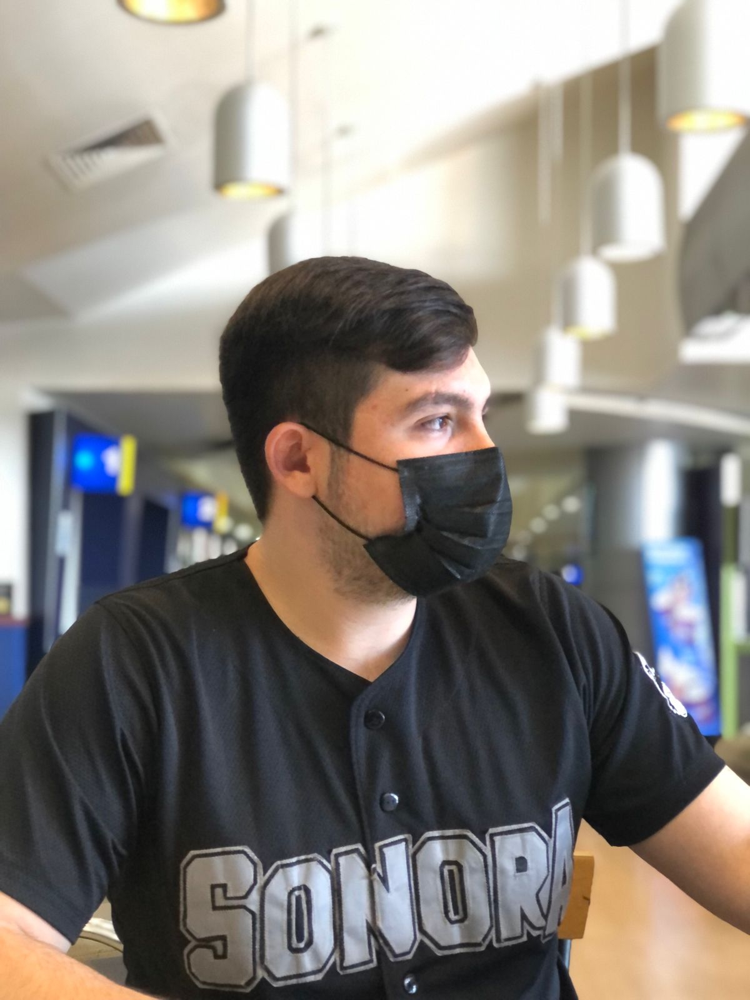
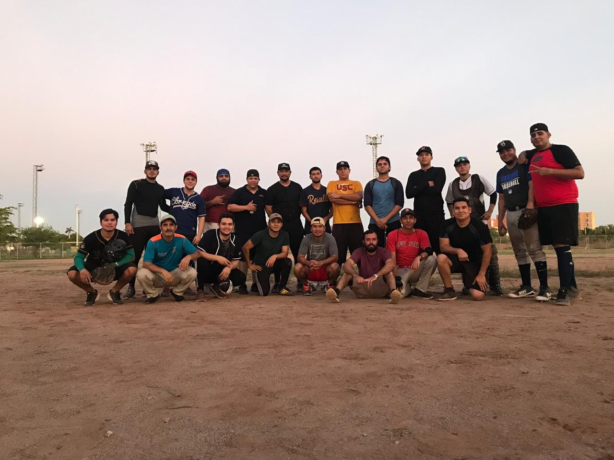
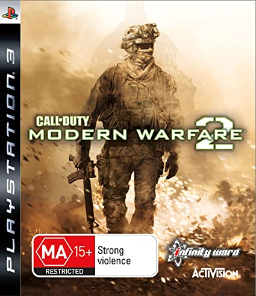

 Student's name: Joaquin Mauricio Castro Enriquez Address: Jesus Garcia #2305 Phone: 644-190-88-00 E-Mail: joaquin.castro216579@potros.itson.edu.mx Major: ISW Semester: VIII
 In the afternoons I really enjoy playing video games or doing sports. Since I was little, my dad took me with him to watch him play baseball, which is why I was very interested in sports at an early age, and to this day, it is still my favorite sport and the one I am best at. I have practiced different sports. When I was in elementary school I played a lot of soccer, I thought that it was the sport that was going to replace my passion for baseball, but, at the time of playing it, I realized that it was not a sport that I enjoyed playing. I preferred baseball.
 Since I can remember, there has always been a video game within my reach, at such an early age I did not know what it was that entertained me so much and over time I got to know more and more what the entire environment of the video games and when I was able to have my first console which was an xbox 360, I totally fell in love with video games. I consider that the Shooter category video games are the ones that I am best at, since it is in this category that I began to develop my ability to play video games.